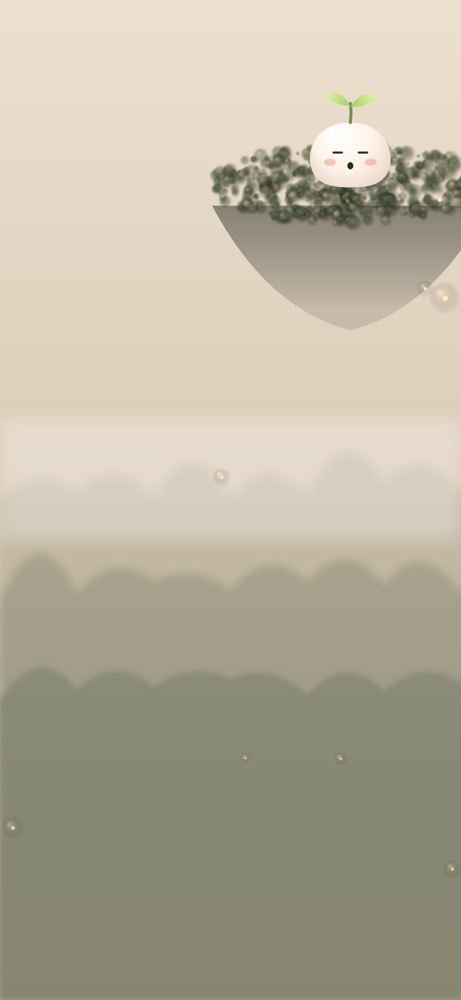

arrow_back_ios_new
今日
wb_twilight
需要关照
步步这几天
早上有点迷糊
water_drop
空腹血糖 · 近 3 天
mmol/L
都比参考范围高一点点
6.1
3.9
参考范围
6.3
6.4
6.2
第 1 天
第 2 天
今天
auto_awesome
可能和这些有关
怎么判断的？
restaurant
3 天晚餐都在 21:30 之后
bedtime
平均睡眠 5.8 小时，少于你的目标
今晚试试
20:00 前吃完晚饭
加入今天
info
这不是诊断。连续一周偏高或某次 ≥ 7.0，步步会建议你做一次检查。
forum
问问步步
notifications
提醒设置
9:41